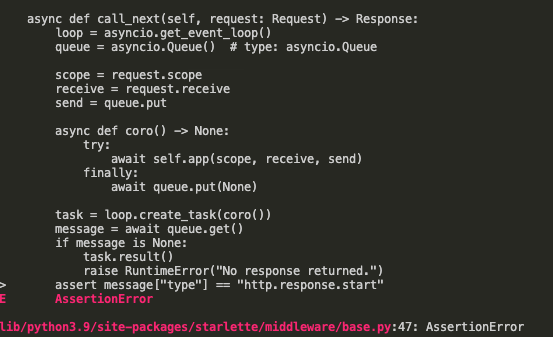

היי לכולם!
אני עובד על הפאנל פיצרים ומה שמצאתי שאני רוצה לעשות לתפוס את כל הבקשות HTTP ואם הבקשה מובילה לפיצר מכובה disabled הוא לא יתן להריץ אותו.
(אם אני לא עושה את זה אני כנראה אצור פונקציה שמי שיש לו פיצר יצתרך כנראה לתמוך בה…)
אז עושה את זה בעזרת Middleware של http שזה בעצם עושה את מה שתיארתי, וזה עובד נפלא.
הבעיה מתחילה כאשר מריצים את הטסטים הקיימים…
כל פעם שעושים בקשת http בעזרת testclient של fastapi זה זורק AssertionError
הנה הפלט.

כמו בתמונה כמובן שחיפשתי באינטרנט איך לטפל בזה ומצאתי בשביל שאוכל להשתמש בmiddleware צריך להשתמש בasync asgi testclient
והנה הבעיה בגיטאב עם דוגמא של השגיאה כאן ובמקרה זה גם המקור שסיפק את התשובה.
כמובן שהחלפתי את הtestclient כדי לנסות לראות שהבעיה נפתרה ואכן השגיאה שספציפית הזאת כן.
אבל שאר הטסטים לא מעודכנים לסוג הזה של testclient ופקודות כמו response.ok לא עובדות.
אשמח להצעות נוספות או האם זה אפשרי שנעדכן את הtestclient שלנו ואת הטסטים שלנו.
Yam
היי,
האם הבעיה היא ספציפית שאין את .ok?
אם כן, בדקת האם יש תחליפים בקוד של המודול?
כן זה אותה בעיה.
וכבר ראיתי את הלינק ששלחת, זה כמו הissue ששלחתי…
כיצד ממשיכים?
Yam
יש פתרונות בטיקט ששלחתי. ניסית אותם?
לייק 1
Liran_C
ניסיתי שם הכל ולא עבד לי.
חלק מהפתרונות עושים שגיאות יותר גדולות.
Yam
לצערי לא יהיה לי זמן להתפנות להיכנס לקוד בקרוב. נסה למצוא פתרונות בעצמך או להיעזר בקהילה
Liran_C
מצאתי פתרון את זה async asgi testclient כפי שציינתי בפוסט.
ולא רצית כי אין .ok ויש במקום .status_code
אז אם זאת הבעיה למה לא לבדוק אם .status_code בין 200 ל299 ?
הראי כל קוד בין 200 ל299 הוא אומר שהבקשה עברה בהצלחה כפי שצויין כאן HTTP response status codes - HTTP | MDN.
Yam
רגע, למה המודול ההוא עובד? מה ממומש בו שונה?
נכנסתי ל¯async asgi test client, זה מודול שמתוחזק חצי כוח
Liran_C
אני לא יודע למה הוא עובד אחרת…
אני רק יודע שזה עובד וזה מה שאומרים לעשות למי שיש את הבעיה.
אתה יכול לראות את ההסבר למה זה עובד כאן. זה מתוך הissue שפתחו בfastapi.
אני יודע מניסיון שfastapi testclient מחזיר type לא מתאים של הבקשה גם מצולם בתמונה למעלה.
Yam
אי אפשר לפתור באגים בלי להבין למה fix שהכנסת לפרויקט עובד, ולמה הדבר הקודם לא.
לא הייתי מכניס לבית שלי תיקונאי שאומר “אין לי מושג למה זה עובד, אבל הנה תראה זה עובד”
הסכנות הן:
הכנסת פתרונות לא מתאימים שיגרמו באגים במקומות אחרים.
יצירת באגים עתידיים עבור אנשים שירצו להוסיף קוד לפרויקט.
פתרון לא מיטבי שלא מתחשב בכל מקרי הקצה, ועלול להוסיף טכנולוגיות לא נכונות או מזיקות לקוד.
אני אשמח אם תוכל לחקור קצת מה ההבדל ולמה אחד עובד והשני לא,
או שתצליח למממש פתרון כזה בעצמך.
לייק 1
Liran_C
אז בדקתי על ההבדלים כמו שביקשת.
הfastapi משתמש ב-starlette middleware הוא אפילו לא משנה אותו.
וכאשר משתמשים בmiddleware עם jinja2 templates
הוא מחזיר message["type"] שונה.
לדוגמא {'type': 'http.response.template'}
וכאשר הקוד רץ הmessage["type"] עובר וולידציה והוא חייב להיות תואם ל- {'type': 'http.response.start'} ככה הקוד שלהם כתוב.
ומצאו שהפתרון הוא להשתמש בasync-asgi-testclient כי הוא מחזיר את הmessage["type"] הנכון.
לפי מה שמצאתי זה הפתרון הרשמי שסגר את הissues של הבעיה הזאת.
בדקתי גם על הסכנות והסכנות האלה לא קיימות פה, fastapi testclient הוא בעצם starlette testclient והוא מבוסס על HTTPX וגם async-asgi-testclient מבוסס על HTTPX, הם בגדול עובדים באותה צורה וההבדל זה הmessage["type"] שונה זה מה שמצאתי על הבדלים.
וגם לfastapi יש פונקציות כמו .ok כמו שאמרנו אבל אפשר לפתור את זה כשבודקים אם ה.status_code
בין 200 ל299 כפי שאומרים כאן HTTP response status codes - HTTP | MDN.
לא הצלחתי לפתור את הבעיה הזאת בעצמי כי הדברים שם הם read only ולא נותן לי לשנות אותם.
מה אתה אומר אפשר להחליף את הtestclient שלנו כדי שאוכל להשתמש בmiddleware?
ותודה רבה על העזרה
2 לייקים
Yam
מגניב, אחלה תגובה וכל הכבוד על המחקר העצמאי
קראתי את הקישורים שהבאת ונראה שזו באמת הבעיה, ואני לא רואה פתרון טוב יותר כרגע.
נשמע אחלה, לך על זה!
לפני שאתה מתחיל שים לב שב־requests שבודקים האם משהו הוא ok, רואים האם הוא בין 200 ל־400 (לא כולל 400) – משום שגם 301/302 ושאר החברים נחשבים כעמוד תקין.
אם אתה בכלל רוצה לצאת מלך – תעשה PR ל־async-asgi-testclient ותוסיף שם .ok
2 לייקים
Liran_C
תודה ענקית !!
אנסה להוסיף .ok נשמע מעניין.
חחחחח
ואולי אפשר להחליף מעכשיו את הtest client שכולם יכולו לעדכן את הטסטים שלהם?
Yam
ברגע שתחליף ואקבל את הקומיט שלך לכולם לא תהיה ברירה
(כן, כדאי להחליף עכשיו)
לייק 1
Liran_C
אבל זה לא יעבור את הטסטים בגיטאב, אתה תקבל את הקומיט בכל זאת?

 או האם זה אפשרי שנעדכן את הtestclient שלנו ואת הטסטים שלנו.
או האם זה אפשרי שנעדכן את הtestclient שלנו ואת הטסטים שלנו.